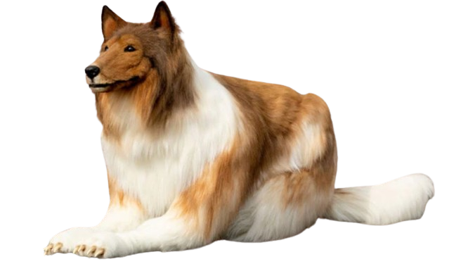
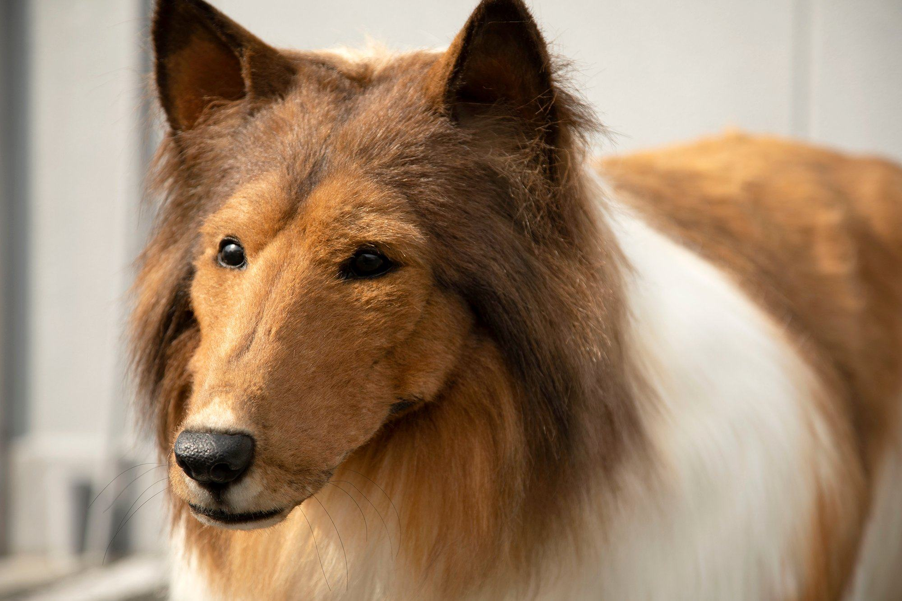
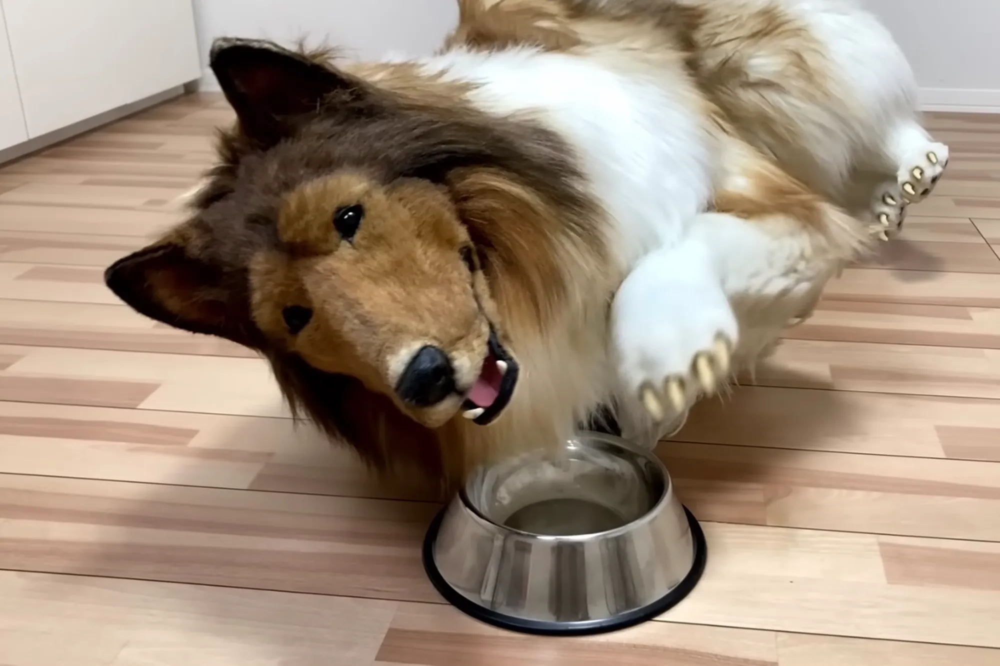
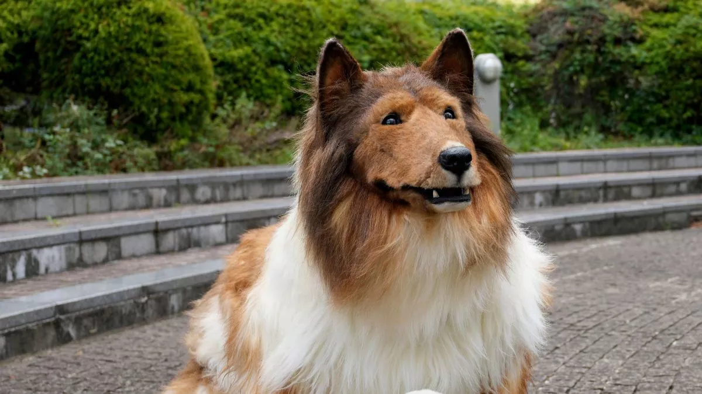
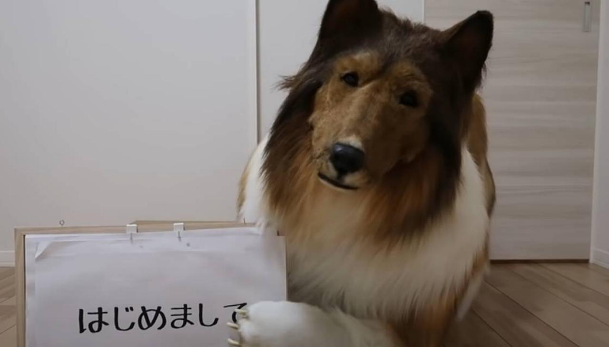

MANDOG
Toco had said that he always "had a vague dream of becoming an animal" ever since he was a child.

Mandog
A Japanese man named Toco spent ₹11 lakh (about $14,000) on a custom-made border collie costume to live out his dream of becoming a dog. The costume, made by Zeppet, took 40 days to create. Toco now shares his experiences online, showing himself engaging in dog-like activities

I`m Taco


